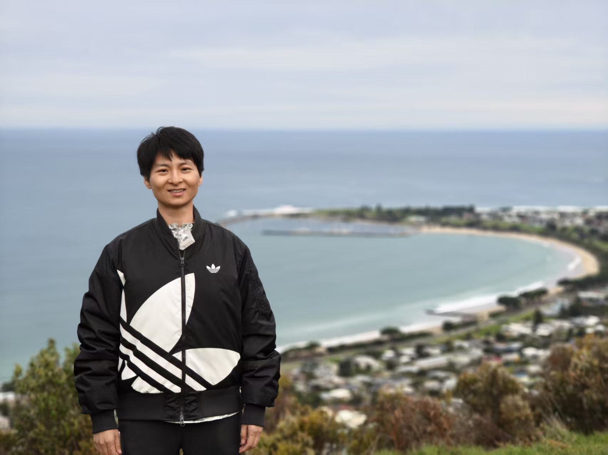

I am a research scientist at JD Future Academy under the TGT programme, working with
Jiachen Liu and
Nan Duan. My research centers on multimodal large
language models: post-training, agents, and multi-modal data synthesis.
Before this, I spent six years at JD Retail building industrial-scale generative recommendation
and NLP systems, with publications at SIGIR, RecSys, AAAI, and EMNLP along the way.
Feel free to reach out for discussion and potential collaborations.

Apollo Bay, Australia, July 2026
Hiring interns. We're looking for interns to join the TGT program.
If you have top-tier publications and a passion for MLLMs and data synthesis,
reach out at zoe.yyzou@gmail.com.
Experience
JD Future Academy — Research Scientist (TGT Programme)Apr. 2026 – present
MLLM post-training, agents, and multi-modal data synthesis
Breaking the Relevance–Diversity Seesaw: Hierarchical LLM Reasoning with RL for Industrial Novelty Recommendation Ying Sun*, Yanyan Zou*, Xiao Wang, Hanchuan Xu, Xuanhua Yang, Sulong Xu, Junbo Qi, Shengjie Li SIGIR 2026
An Industrial Framework for Personalized Serendipitous Recommendation in E-commerce Zongyi Wang, Yanyan Zou#, Linfang Hou, Anyu Dai, Nan Qiao, Luobao Zou, Mian Ma, Zhuoye Ding, Sulong Xu RecSys 2023 [paper]
Text Generation for E-Commerce
Automatic Product Copywriting for E-Commerce Yanyan Zou, Xueying Zhang, Jing Zhou, Shiliang Diao, Jiajia Chen, Zhuoye Ding, Zhen He, Xueqi He, Yun Xiao, Bo Long, Mian Ma, Sulong Xu, Han Yu, Lingfei Wu AI Magazine 2023 (extended journal version of the AAAI/IAAI 2022 paper) [paper]
Automatic Scene-based Topic Channel Construction System for E-Commerce Peng Lin*, Yanyan Zou*#, Lingfei Wu, Mian Ma, Zhuoye Ding, Bo Long EMNLP 2022 [paper]
Interactive Latent Knowledge Selection for E-Commerce Product Copywriting Generation Zeming Wang, Yanyan Zou#, Yuejian Fang, Hongshen Chen, Mian Ma, Zhuoye Ding, Bo Long ACL-ECNLP 2022 [paper]
FCM: A Fine-grained Comparison Model for Multi-turn Dialogue Reasoning Xu Wang, Hainan Zhang, Shuai Zhao, Yanyan Zou, Hongshen Chen, Zhuoye Ding, Bo Cheng, Yanyan Lan EMNLP 2021
Adaptive Bridge between Training and Inference for Dialogue Generation Haoran Xu, Hainan Zhang, Yanyan Zou, Hongshen Chen, Zhuoye Ding, Yanyan Lan EMNLP 2021
Pre-training for Abstractive Document Summarization by Reinstating Source Text Yanyan Zou, Xingxing Zhang, Wei Lu, Furu Wei, Ming Zhou EMNLP 2020 [paper]
Semantic Parsing & Language Understanding
Text2Math: End-to-end Parsing Text into Math Expressions Yanyan Zou, Wei Lu EMNLP 2019 [paper][supp][code]
Aligning Cross-lingual Entities with Multi-Aspect Information Yanyan Zou*, Hsiu-Wei Yang*, Peng Shi*, Wei Lu, Jimmy Lin, Xu Sun EMNLP 2019 (Oral) [paper][code]
Incorporating Fine-grained Events in Stock Movement Prediction Deli Chen, Yanyan Zou, Xuancheng Ren, Ruihan Bao, Keiko Harimoto, Xu Sun EMNLP-ECONLP 2019 [paper]
Quantity Tagger: A Latent-Variable Sequence Labeling Approach to Solving Addition-Subtraction Word Problems Yanyan Zou, Wei Lu ACL 2019 [paper][supp][code]
Joint Detection and Location of English Puns Yanyan Zou, Wei Lu NAACL 2019 (Oral) [paper][code]
Learning Cross-lingual Distributed Logical Representations for Semantic Parsing Yanyan Zou, Wei Lu ACL 2018 (Oral) [paper][code][slides]
CLTR: Collectively Linking Temporal Records Across Heterogeneous Sources Yanyan Zou, Kasun S. Perera DASFAA 2017
Awards & Honors
IAAI Innovative Application Award, AAAI 2022, for "Automatic Product Copywriting for E-Commerce"